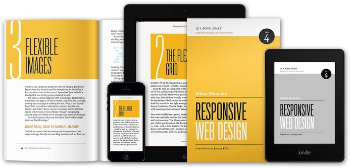
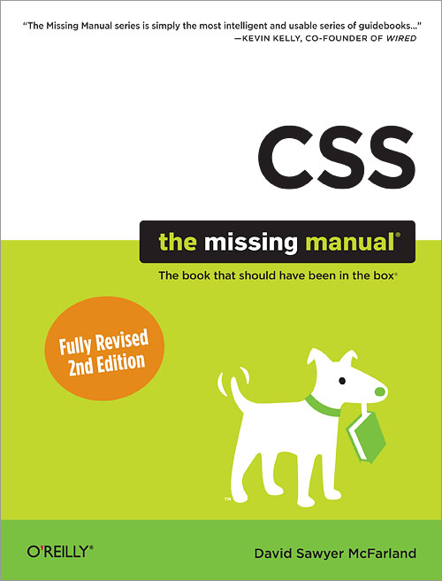

INFO 343
Web Technologies
Autumn 2013
Dr David Stearns
Today
- Introduce the Course
- How the Web Works (Part I)
- Your First Web Page
- Managing Your Files (Git and FTP)
But first, introduce yourselves!
Ask the person next to you...
- What's your name?
- What your major and year in school?
- Where are you from (hometown)?
- What is your greatest fear about this class?
Course Introduction
There are really only 6 questions you need answered:
- What's this course about?
- What are you going to make me do?
- How hard do I need to work to get the grade I want?
- What do I need to get/have?
- What do I do when I have a question or problem?
- Who are you, and why are you torturing me?
What's this course about?
Short Answer
Building the client-side portions of effective and engaging web sites/applications that solve real people's problems.
Language and Tools

- HTML 5
- CSS 3
- JavaScript and jQuery
- Handy Web Development Tools
- Popular CSS/JS Frameworks
- Content Management Systems
Techniques
- Resposive Web Design
- AJAX and Mashups
- Reusable JavaScript libraries
- Project Organization and Management
- Data Visualization
- Transaction Processing

Overriding Concerns
- User Experience
- Accessibility
- Security
- Performance
- Maintainability
What are you going to make me do?
| Assignment Type | Weight |
|---|---|
| Weekly Labs (Fridays) | 20% |
| Four Individal Homework Projects | 40% |
| Final Group Project | 30% |
| In-Class Challenges | 10% |
How hard do I need to work?
Very hard!
(Duh!)
What do I need to get/have?
There are no required books!
But, there will be online articles to read for each class
(see Canvas)
Recommended Books
What do I do when I have a question?
- Post to discussion boards in Canvas
- Contact your TA
- Contact Dr Stearns
- dlsinfo@uw.edu
- Office Hours: TTh 1:30-3:00, MGH 330N
Who are you?
I'm not Batman
Who are you?
- Software developer since 1991
- Started developing for the web in 1995
- PhD in History/Sociology of Technology
(University of Edinburgh, 2008)